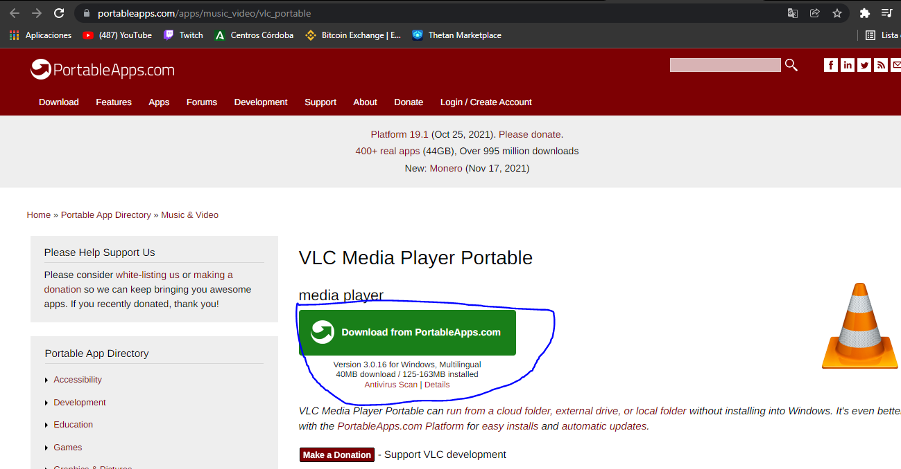
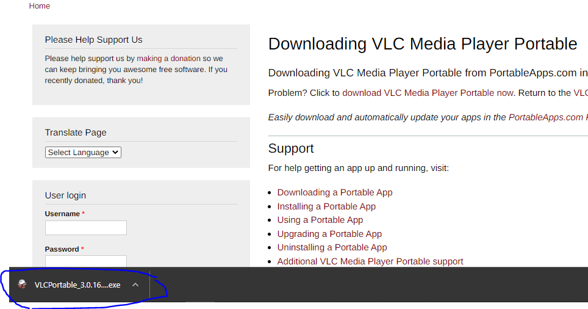
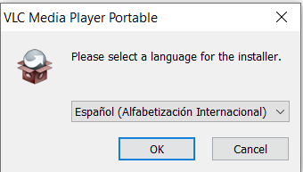
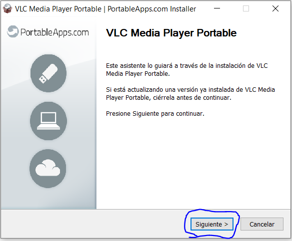
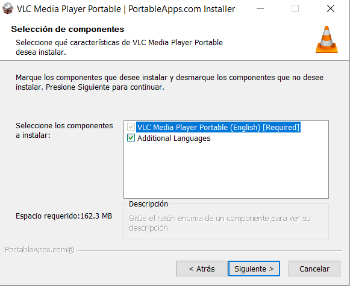
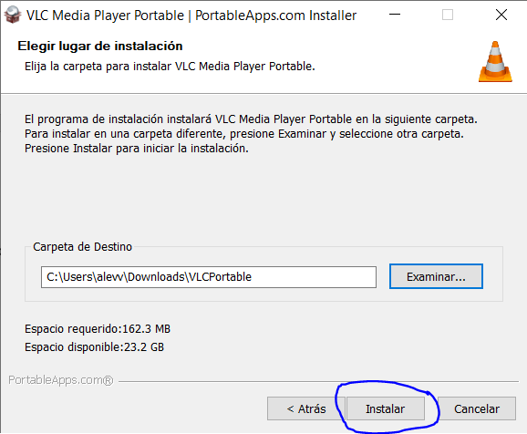
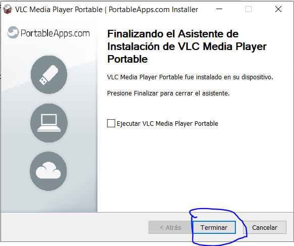

Paso1
Desde la página portableApps.com, nos vamos a descargar la versión portable de VLC.
Paso2
Comienza la descarga y cuando termine pulsamos en la descarga.
Paso3
Elegimos en la instalación el idioma que queremos el programa.
Paso4
Nos aparece este panel le damos a siguiente.
Paso5
Seleccionamos los componentes que queremos instalar y le damos a siguiente.
Paso6
Elegimos la carpeta donde se va a instalar la carpeta portable de VLC, cuando tengamos asignada la dirección pulsamos en instalar.
Paso7
Una vez terminada la instalación, nos aparece esta ventana y le damos a terminar y ya estará nuestro VLC portable listo para meterlo en un USB o donde queramos.
